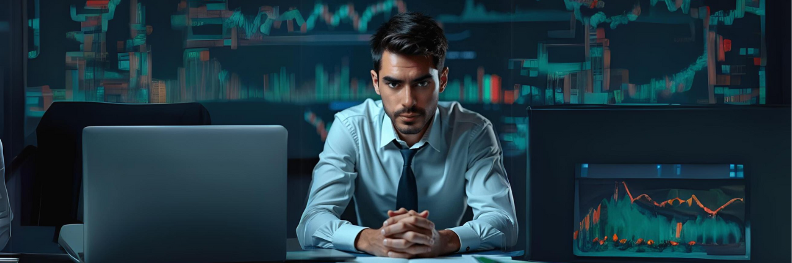

Meu nome é Guilherme Vinicius, e desde muito cedo, meu interesse por tecnologia sempre foi evidente. Aos 9 anos, minha tia, temendo que eu quebrasse algo ou colocasse vírus no computador dela, impediu meu acesso e até colocou uma senha. No entanto, minha curiosidade de mexer era maior. Decidi descobrir a senha, não por algo grandioso, mas simplesmente para jogar meu jogo favorito da época, "Habbolella". Passei horas tentando combinações até que, finalmente, consegui acessar o computador. A felicidade foi enorme, pois eu finalmente poderia jogar. No fim, tudo era apenas uma diversão, mas marcou o início da minha paixão por tecnologia.
O Início de uma Paixão
.png)
O Primeiro Computador

Aos 14 anos, conquistei meu primeiro computador, o que foi um marco importante na minha vida. Ter uma máquina própria me permitiu mergulhar mais fundo no universo da tecnologia. Cada nova tentativa, seja em programação ou em ajustes de sistema, trouxe aprendizados valiosos e fortaleceu minha paixão pela área. Esse período foi crucial, pois cada dia de exploração e experimentação me ajudou a desenvolver habilidades práticas e a entender melhor o funcionamento dos sistemas. A partir desse momento, minha jornada tecnológica começou a ganhar forma, e cada desafio enfrentado contribuiu significativamente para o avanço da minha carreira.
Desafios Acadêmicos e Autodescobertas
Na escola, eu lutava para acompanhar o ritmo das matérias e frequentemente não recebia notas acima de 5. Apesar de usar óculos para corrigir problemas de visão, minha performance acadêmica não melhorava. No entanto, fora da sala de aula, descobri minha verdadeira paixão na tecnologia. Minha habilidade com computadores se destacava, e eu tinha um talento natural para resolver problemas complexos de maneira criativa. Mesmo que minhas notas não refletissem meu potencial, era no campo da tecnologia que eu realmente brilhava e encontrava realização. Esse reconhecimento fora da escola foi fundamental para direcionar minha carreira para o que eu realmente amava.
Explorando o Mercado Digital
Meu desejo de explorar a tecnologia me levou a mergulhar em várias áreas do mercado digital, como E-commerce, Designer, Web Designer, SEO, Copywriter, Afiliado, Marketing digital, me aprofundei no mercado financeiro também, explorando day trader, compra de ações, criptomoedas. Além disso, realizei análises de mercado e padrões de gráfico para entender tendências e tomar decisões informadas. Apesar de enfrentar mais desafios do que vitórias inicialmente, cada experiência foi fundamental para meu aprendizado e crescimento. Esse período foi crucial para minha reinvenção, permitindo-me desenvolver uma visão mais criativa e visionária tanto pessoal como profissional. Com o tempo, essas experiências diversificadas não só construíram uma base sólida de conhecimentos, mas também aprimoraram minha capacidade de oferecer serviços eficazes e ajudar meus clientes a alcançar seus objetivos online.
O Foco na Segurança Cibernética
Com o tempo, descobri que minha verdadeira paixão está na segurança cibernética. Proteger sistemas contra ameaças, identificar vulnerabilidades e resolver desafios complexos se tornou meu foco principal. Dedico-me constantemente ao aprendizado, atualizando-me com as últimas tecnologias e melhores práticas da área. A cada nova ameaça ou vulnerabilidade, busco entender e enfrentar o problema com soluções inovadoras e eficazes. Embora ainda esteja construindo minha experiência, estou profundamente comprometido em aprimorar minhas habilidades e conhecimentos. Estou convencido de que, com persistência e esforço contínuo, farei uma contribuição significativa para a segurança digital e alcançarei um papel de destaque no setor, ajudando a proteger informações valiosas e garantir a integridade dos sistemas.